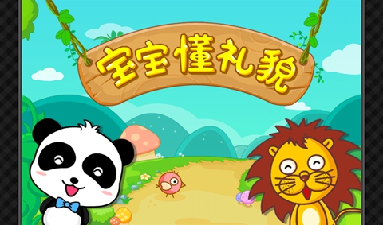

互惠动态
|
|
和孩子说的日常英语，拿走不谢！
It’s time to go sleepy-bye.(到睡觉的时间了。)
Sweat dreams.(做个好梦。)
It’s time to go to bed./Time for bed.(该上床了。)
It’s time to have a nap.(该午休了。)
Wake up!(起床。)
Did you sleep well?(睡好了吗？)
Time to get up.(该起床了。)

It’s time to get dressed(该穿衣服了。)
What do you want to wear today?(今天想穿什么？)
This shirt doesn’t go with those pants.(这件上衣和裤子不搭配。)
Stand still. / sit still.(站好/坐好。)
Now put on your sweater.(现在穿上毛衣。)
Take your clothes off./ Take off your clothes.(脱衣服。)
Pick up your socks, please.(请把袜子捡起来。)
Put on your trousers/shoes/coat/cap.穿上你的裤子/鞋子/外套/帽子。
Come sit at the table。(过来坐在桌旁。)
Stop playing with your food。(不要再玩食物了。)
Don’t talk with your mouth full。(嘴里吃着不要说话。)
Help Daddy do the dishes。(帮助爸爸收盘子。)
Help Mommy to set the table。(帮助妈妈放桌子。)
Help us clear off the table。(帮我们收拾桌子。)
It’s bad for you!(这对你不好。)
I have told you many times not to do that。(我已经告诉你好几遍了不要那样做。)
Don’t sit too close to the TV。(不要坐的离电视太近。)
It’s nothing. It’s just alittle cut。(不要紧，只是小伤口)
Don’t touch the electrical outlets。(不要碰电源插座)
Don’t try to plug/put anything in the outlet。(不要试图拔或放任何东西在插座里。)
Those tools are too sharp; they’re only for grownups。(那些工具太锋利了，只有大人能用)
Don’t use others cup; you could catch his cold/germsthat way。(不要用别人的杯子，那样会传染病菌)
Don’t play with fire; it’sdangerous。(不要玩火，危险)
Wait for the green light before you cross the street。(等绿灯亮了再过马路)
Always look both side before crossing the street. (过马路前一定看两边。)
Your hands are sticky。(你的手很脏。)
Wash your hands immediately。(马上去洗手。)
Look at the mess you’ve made。(看看你弄的。)
You need to have a bath。(你得洗个澡了。)
Don’t interrupt daddy/mommy。(不要打断妈/爸说话)
Don’t bother me while I’m onthe phone。(我打电话时不要捣乱。)
Are you going to apologize?(你准备道歉吗？)
You need to share your toys with your sister。(你应该与妹妹分享玩具。)
He had that toy first。(他先拿到的玩具。)
This toy doesn’t belong to you。(这个玩具不是你的。)

What’s happened?(发生什么事了？)
What’s the matter?(怎么了？)
Why are you crying?(为什么哭？)
Don’t worry。(不要担心。)
Everything’s fine。(一切都会好的。)
There’s nothing to be scared of。(没什么可怕的。)
Are you feeling better now?(你现在感觉好些吗？)
We’re right in the next room。(我们就在旁边的屋子)
Great job!(太棒了！)
I’m so proud of you。(我真为你骄傲！)
Well done!(干得好！)
You were so brave/great/good!(你真勇敢/棒！)

Stop doing that。(停下)
We need to discuss this。(我们需要检讨一下。)
Good girls/boys don’t do/say things like that。(好孩子不那样做说。）
You’re part of a family, and you can’t think only about yourself。(你是家庭的一员，你不能只想到自己。)
Don’t argue me about this。(不要再和我争论了。)
I’m going to count to three, and if you don’t have the toys picked up by then …(数到三你不收玩具，我就。。。)
No more discussion, you’re going to bed now。(没有商量的余地，你必须现在上床。)
Don’t raise your voice at me!(不要对我提高嗓门！)
That’s a rude way to speak。(那样说话不礼貌/粗鲁。)
We can’t eat the food until we pay for it。(这食物在付款之前我们不能吃。)
Don’t run around here; we’renot at home。(不要在这乱跑，我们不是在家里。)
Please don’t knock down all those cans。(请不要把那些罐子碰倒。)
Don’t touch anything here. These things aren’t ours。(不要碰任何东西，这不是我们的。)
You promised me you wouldn’t ask me to buy anything。(你答应我的不买任何东西。)

关于互惠，您了解得够多么？
请外国学生来家庭照顾孩子，辅导孩子外语？
只了解这些是不够的！
获取更多信息请参考以下方式：
联系ASC：
电话：86-21-61116069(上海中心）
86-25-66065662（南京中心）
全国家庭均可申请！
手机：15601666586（可加微信）
Q Q：3259637585
微信：asc-center
邮箱：info@asc-center.com
网站：www.asc-aupair.com

感谢您对我们的关注